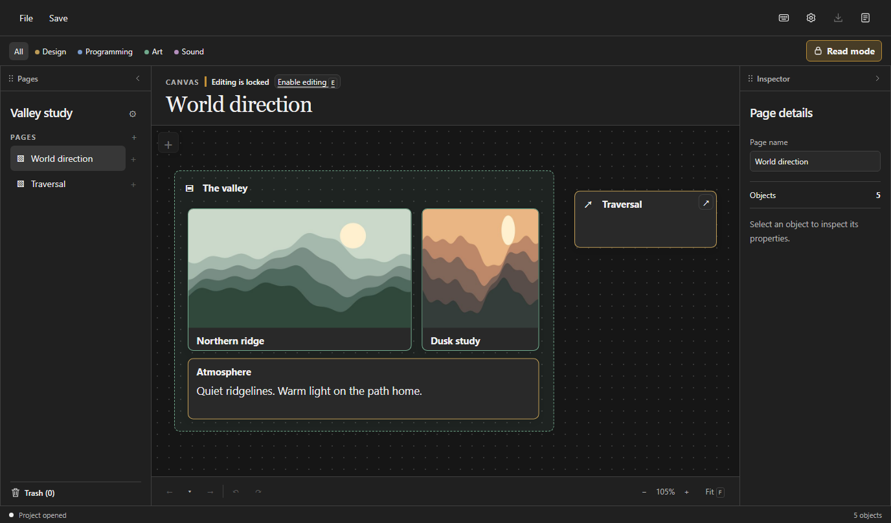

Compose a board
Arrange images and notes on an infinite canvas. Move them together in a frame, resize from a corner or rotate the selection.
Project design workspace
Plan a game or an app on a visual canvas. Play audio and video alongside sketches and design notes, then filter by tag to focus on the work you’re reviewing.
View GitHub releasesWindows x64 · Portable executable

Arrange images and notes on an infinite canvas. Move them together in a frame, resize from a corner or rotate the selection.
Listen to a WAV sound cue, review a WebM animation or watch a YouTube reference in an embedded player, with the design notes still in view.
Assign tags to pages and canvas objects. Start with a preset such as Video Games or Apps & Web, then customize the tags and choose which ones to show.
A word in a note can link to a page or a specific object, so readers can jump straight to the detail it describes.
Open the executable and save your project to a file. Move the project file and its assets folder together to carry copied references to another computer.
The project design workspace has a new name and icon.
Connect canvas objects with arrows that follow their endpoints as objects move.
Draw multiple strokes and save them as one canvas object. Accept the drawing to continue sketching or discard the draft.
Sketch directly on the canvas with an adjustable brush. Select and transform strokes like other canvas objects. Build diagrams with linked nodes and nested levels.
Browse saved versions by author and date and restore a page while keeping its later versions.
Register users with names and icons, then choose your identity when entering edit mode.
Play local videos on their canvas cards. Find attachment paths and relinking at the bottom of the inspector.
Play, pause and scrub audio files directly on their canvas cards.
Canvas objects support proportional resizing. The welcome screen includes snapping preferences and can be reopened after closing a project.
Open recent project files from the welcome screen, check their availability or resume your last project automatically.
Choose which image titles appear on the canvas and in exports. Open a saved PDF or its folder from the Windows status bar.
Use navigation history beside Undo and Redo, export from File and create child pages directly from the page context menu.
Set up project departments at creation, add child pages in the tree and create objects directly on the canvas. Find export beside Save, navigation and Trash in Pages, and local error logs beside Settings.
Export one canvas or a whole project as a PDF with a linked index. Share an editable ZIP and collect linked files and folders before packing.
Edit note titles directly, jump through recent visits and create a sample project in a folder of your choice. Blank projects open ready to edit.
Undo and redo project edits, including group transforms. Assign multiple departments to objects from the context menu or inherit them from the page.
Copy or link files and folders, paste web and YouTube links, assign page departments and configure project colors. Frames can be resized independently, with visual alignment controls for multi-selection.
Drag Pages and Inspector to either edge and fold them from their headers. The file toolbar marks unsaved changes on Save, and the mode switch sits at the right end of the project toolbar.
Transform multiple objects together, snap objects into position, fit notes to their boxes and return to previous views. Project settings, dockable panels and a recoverable page trash are included.
Internal text and object links, nested page ordering, corner resizing and rotation, persistent editing mode across pages, a neutral dark theme and portable update checks.
Local projects, reference images, notes, frames, department filters and light and dark themes.